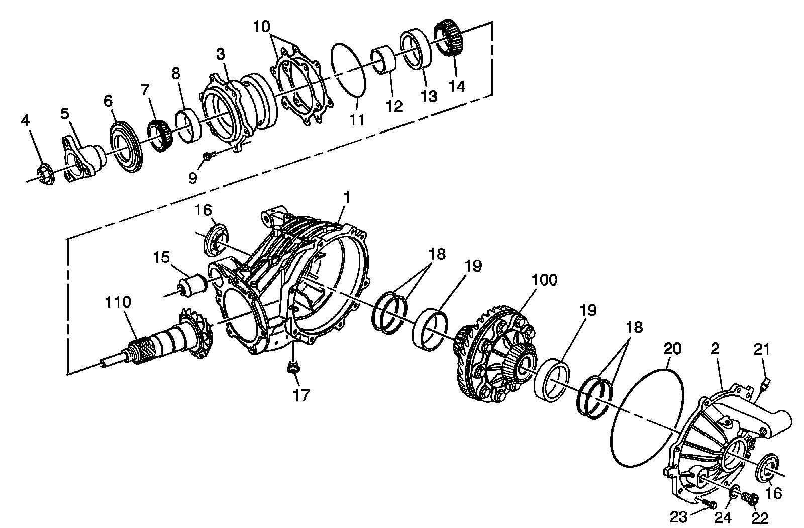
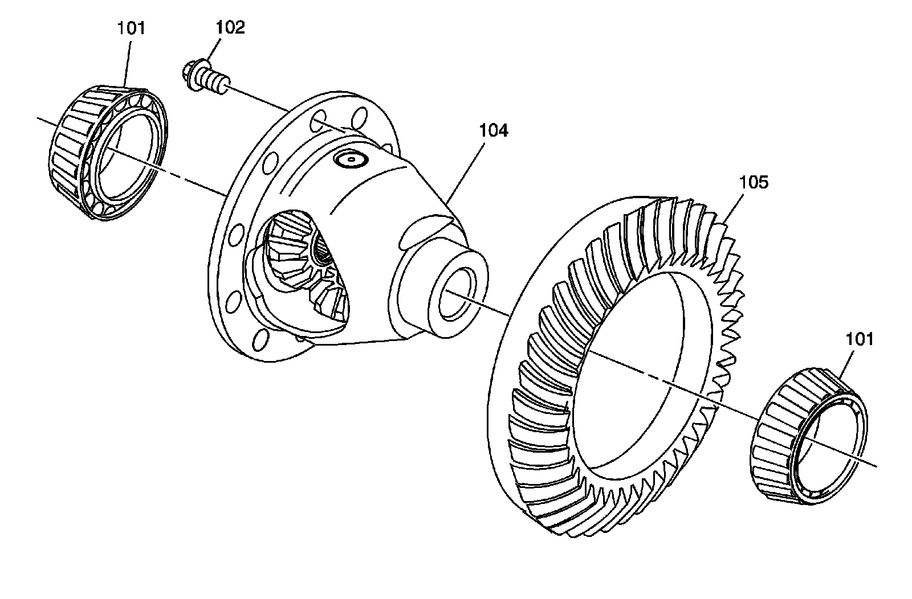

Differential Assembly: Diagrams
Rear Axle Disassembled Views
Rear Axle
Rear Axle:

1 - Differential Carrier
2 - Carrier Cover
3 - Pinion Bearing Cage
4 - Nut
5 - Flange
6 - Pinion Oil Seal
7 - Bearing
8 - Cup
9 - Bolt
10 - Shim
11 - O-ring Seal
12 - Pinion Bearing Spacer
13 - Cup
14 - Bearing
15 - Support Bushing
16 - Axle Oil Seal
16 - Axle Oil Seal
17 - Drain Plug
18 - Shim
18 - Shim
19 - Cup
19 - Cup
20 - O-ring Seal
21 - Vent
22 - Fill Plug
23 - Bolt
24 - Fill Plug Washer
100 - Differential Assembly
110 - Pinion Gear
Differential Assembly
Differential Assembly:

101 - Bearing
101 - Bearing
102 - Bolt
104 - Differential Case
105 - Ring Gear